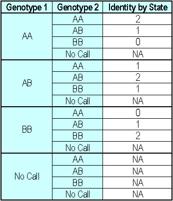

|
Identity by State
SNPduoWeb is a visualization tool built upon the principle of identity by state (IBS). Identity by state is a biological comparison of genotypes between two individuals which states how many identical alleles their genotypes share. The possible combinations are:

SNPduoWeb Plot
SNPduoWeb takes SNP data in any of the listed formats, performs a point by point comparison of genotypes between two individuals, and reports back the number of alleles identical by state for each SNP. This information is used to generate a plot to visually display the information.
The resulting plot shows the physical position along the X-axis (abscissa) and the identity by state on the Y-axis (ordinate) in the first panel. The number of counts for each IBS type are displayed along the right side of the Y-axis.
The second panel displays the genotype data for individual one as a function of physical map distance. "No Call" SNPs are displayed on this graph, along with counts for each genotype to the right of the Y-axis.
The third panel displays the genotype data for individual two in exactly the same fashion as described for individual one.
Utility
The more closely related two individuals are the more alleles they will share that are identical by state. That is to say that the closer the relationship the greater the number of alleles shared completely (IBS 2) and partially (IBS 1), while the number of alleles not shared at all (IBS 0) decreases. Therefore SNPduoWeb allows for the display of "relatedness". The uses and features SNPduoWeb include:
| Back | Return to the SNPduoWeb homepage |
| Home | Return to the Pevsner Lab Homepage |